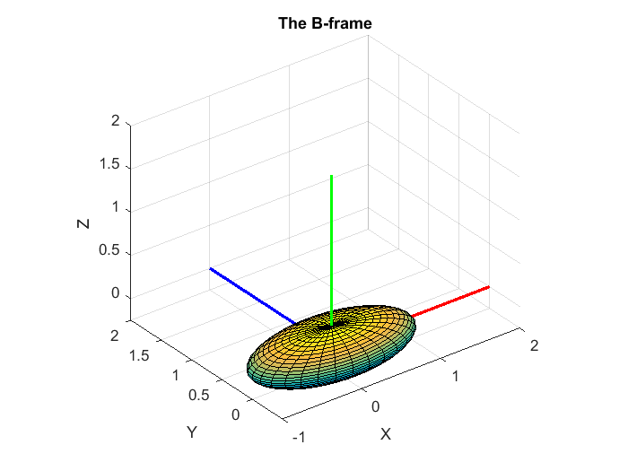
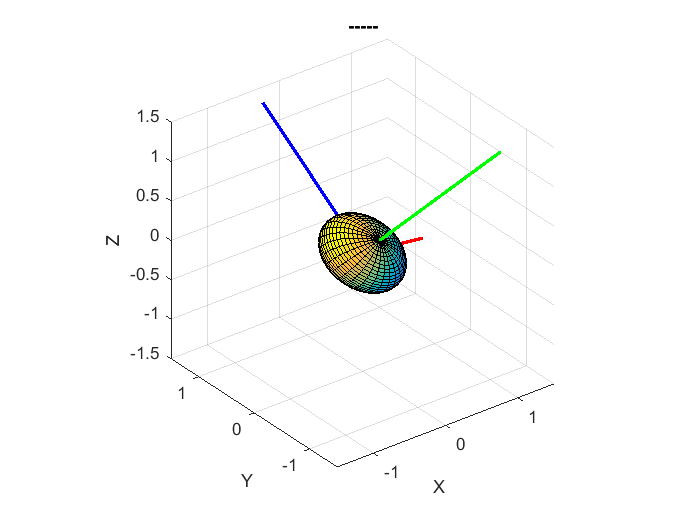
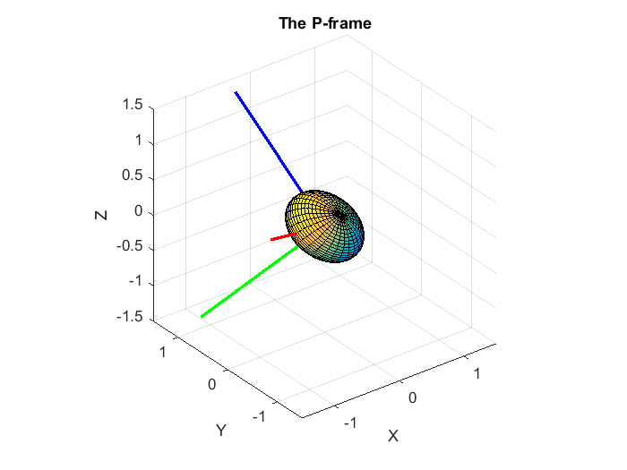

Contents
- create an example to be used with our tutorial on PRINCIPAL moments of inertia
- Consider an ellipsoid
- plot it:
- Construct a PASSIVE rotation matrix:
- So working backwards:
- do eigen decomposition
- sort eigenvalues in ASCENDING order
- check ORTHONORMALITY
- Construct rotations from eigenvectors
- PLOT it
- Ensure that our P-frame makes a RIGHT handed co-ordinate frame
create an example to be used with our tutorial on PRINCIPAL moments of inertia
Consider an ellipsoid
REF: https://en.wikipedia.org/wiki/List_of_moments_of_inertia
m = 1000; ax = 1; % semiaxes length in X direction by = 0.5; % semiaxes length in Y direction cz = 0.25; % semiaxes length in Z direction Ip = (m/5)*[ (by^2 + cz^2), 0, 0; 0, (ax^2 + cz^2), 0; 0, 0, (ax^2 + by^2);]
Ip =
62.5 0 0
0 212.5 0
0 0 250
plot it:
[x, y, z] = ellipsoid(0,0,0,ax,by,cz,30); figure surf(x, y, z) axis equal hold on plot3([0;2], [0;0], [0;0], '-r', 'LineWidth', 2); hold on plot3([0;0], [0;2], [0;0], '-b', 'LineWidth', 2); plot3([0;0], [0;0], [0;2], '-g', 'LineWidth', 2); axis('equal'); grid('on'); xlabel('X'); ylabel('Y'); zlabel('Z'); %xlim([-1.5, 1.5]); ylim([-1.5, 1.5]); zlim([-1.5, 1.5]); title('The B-frame')
Construct a PASSIVE rotation matrix:
vp = pRb * vb
degs_yaw = 30;
degs_pitch= 23;
degs_roll = 45;
apas_OBJ = bh_rot_passive_G2B_CLS({'D1Z','D2Y','D3X'}, ...
[degs_yaw, degs_pitch, degs_roll], ...
'DEGREES')
pRb = apas_OBJ.get_R3R2R1();
bRp = pRb.' ;
new_xyz_mat = bRp * [ x(:)' ;
y(:)' ;
z(:)' ;];
N = size(x,1);
nX = reshape(new_xyz_mat(1,:)', N, N);
nY = reshape(new_xyz_mat(2,:)', N, N);
nZ = reshape(new_xyz_mat(3,:)', N, N);
xx = bRp * [2;0;0];
yy = bRp * [0;2;0];
zz = bRp * [0;0;2];
figure
surf(nX, nY, nZ)
axis equal
hold on
plot3([0;xx(1)], [0;xx(2)], [0;xx(3)], '-r', 'LineWidth', 2);
plot3([0;yy(1)], [0;yy(2)], [0;yy(3)], '-b', 'LineWidth', 2);
plot3([0;zz(1)], [0;zz(2)], [0;zz(3)], '-g', 'LineWidth', 2);
axis('equal'); grid('on'); xlabel('X'); ylabel('Y'); zlabel('Z');
xlim([-1.5, 1.5]); ylim([-1.5, 1.5]); zlim([-1.5, 1.5]);
title('-----')
apas_OBJ =
bh_rot_passive_G2B_CLS with properties:
ang_units: DEGREES
num_rotations: 3
dir_1st: D1Z
dir_2nd: D2Y
dir_3rd: D3X
ang_1st: 30
ang_2nd: 23
ang_3rd: 45
 So working backwards:
Ip = pRb * Ib * pRb.'
therefore: Ib = pRb' * Ip * pRb
format shortG
pRb = bRp';
Ib = pRb' * Ip * pRb
Ib =
130.35 -65.578 61.193
-65.578 189.16 15.4
61.193 15.4 205.49
do eigen decomposition
[V, D] = eig(Ib)
V =
-0.79718 -0.59283 -0.11428
-0.46025 0.47423 0.75052
0.39073 -0.6509 0.6509
D =
62.5 0 0
0 250 0
0 0 212.5
sort eigenvalues in ASCENDING order
[~,ind] = sort( diag(D) ); D = D(:,ind) V = V(:,ind)
D =
62.5 0 0
0 0 250
0 212.5 0
V =
-0.79718 -0.11428 -0.59283
-0.46025 0.75052 0.47423
0.39073 0.6509 -0.6509
check ORTHONORMALITY
V * V'
ans =
1 -1.1102e-16 -5.5511e-17
-1.1102e-16 1 -1.1102e-16
-5.5511e-17 -1.1102e-16 1
Construct rotations from eigenvectors
pRb_again = V';
%pRb_again(:,3) = cross(pRb_again(:,1), pRb_again(:,2))
Ip_again = pRb_again * Ib * pRb_again.'
bRp = pRb_again.' ;
Ip_again =
62.5 -3.5527e-15 -4.7962e-14
0 212.5 5.6843e-14
-4.9738e-14 2.8422e-14 250
PLOT it
b_xi_p = bRp * [2;0;0]; b_yi_p = bRp * [0;2;0]; b_zi_p = bRp * [0;0;2]; figure surf(nX, nY, nZ) axis equal hold on plot3([0;b_xi_p(1)], [0;b_xi_p(2)], [0;b_xi_p(3)], '-r', 'LineWidth', 2); hold('on'); plot3([0;b_yi_p(1)], [0;b_yi_p(2)], [0;b_yi_p(3)], '-b', 'LineWidth', 2); plot3([0;b_zi_p(1)], [0;b_zi_p(2)], [0;b_zi_p(3)], '-g', 'LineWidth', 2); axis('equal'); grid('on'); xlabel('X'); ylabel('Y'); zlabel('Z'); xlim([-1.5, 1.5]); ylim([-1.5, 1.5]); zlim([-1.5, 1.5]); title('The P-frame')
Ensure that our P-frame makes a RIGHT handed co-ordinate frame
bRp(:,3) = cross(bRp(:,1), bRp(:,2)) b_xi_p = bRp * [2;0;0]; b_yi_p = bRp * [0;2;0]; b_zi_p = bRp * [0;0;2]; figure surf(nX, nY, nZ) axis equal hold on plot3([0;b_xi_p(1)], [0;b_xi_p(2)], [0;b_xi_p(3)], '-r', 'LineWidth', 2); hold('on'); plot3([0;b_yi_p(1)], [0;b_yi_p(2)], [0;b_yi_p(3)], '-b', 'LineWidth', 2); plot3([0;b_zi_p(1)], [0;b_zi_p(2)], [0;b_zi_p(3)], '-g', 'LineWidth', 2); axis('equal'); grid('on'); xlabel('X'); ylabel('Y'); zlabel('Z'); xlim([-1.5, 1.5]); ylim([-1.5, 1.5]); zlim([-1.5, 1.5]); title('The P-frame')
bRp =
-0.79718 -0.11428 -0.59283
-0.46025 0.75052 0.47423
0.39073 0.6509 -0.6509